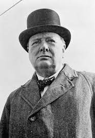

Winston Churchill

Winston Churchill was a British statesman, soldier, and writer who served two times as Prime Minister of the United Kingdom, from 1940 to 1945 and from 1951 to 1955. He was a Member of Parliament from 1900 to 1964. For most of his carrer he was part of the Conservative Party. Winston Churchill Led the country and allied powers from near defeat to victory in WWII. He shaped the strategies for the amries, impacting the output of the war massavely. Without Winston Churchill the world will be very diffrent from what we would known. He was born on November 30, 1874, Blenheim Palace, United Kingdom and died on January 24, 1965 (age 90 years), Kensington, London, United Kingdom.